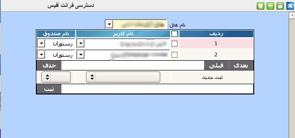

۱-دسترسی فرانت آفیس
در این پنل کاربر ارشد دسترسی کاربران به هر صندوق از هر مجموعه را تعیین می نماید.

برای ثبت دسترسی جدید ابتدا باید از منوی کشویی بالای جدول نام هتل مورد نظر را انتخاب نمایید سپس از قسمت پایین پنل کاربر مورد نظر را از منوی کشویی انتخاب و از منوی بعدی صندوق مورد نظر را انتخاب کنید و در انتها بر روی دکمه ثبت کلیک نمایید.
جهت ویرایش مقادیر هر آیتم بر روی آن کلیک نمایید سپس مقدار مورد نظر را از منوی کشویی انتخاب کنید.
جهت حذف تکی هر آیتم, موس خود را بر روی شماره ردیف آیتم برده و بر روی لینک حذف کلیک نمایید.
جهت حذف گروهی آیتم ها, آیتم های مورد نظر را انتخاب و بر روی دکمه حذف کلیک نمایید.